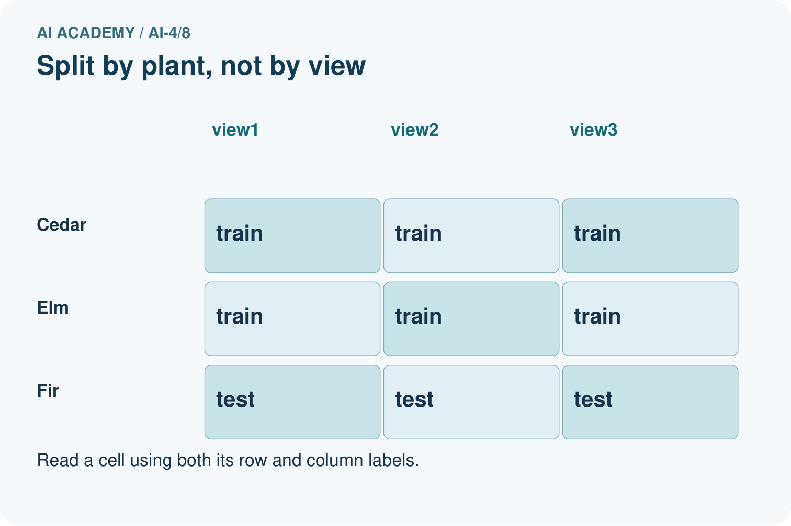
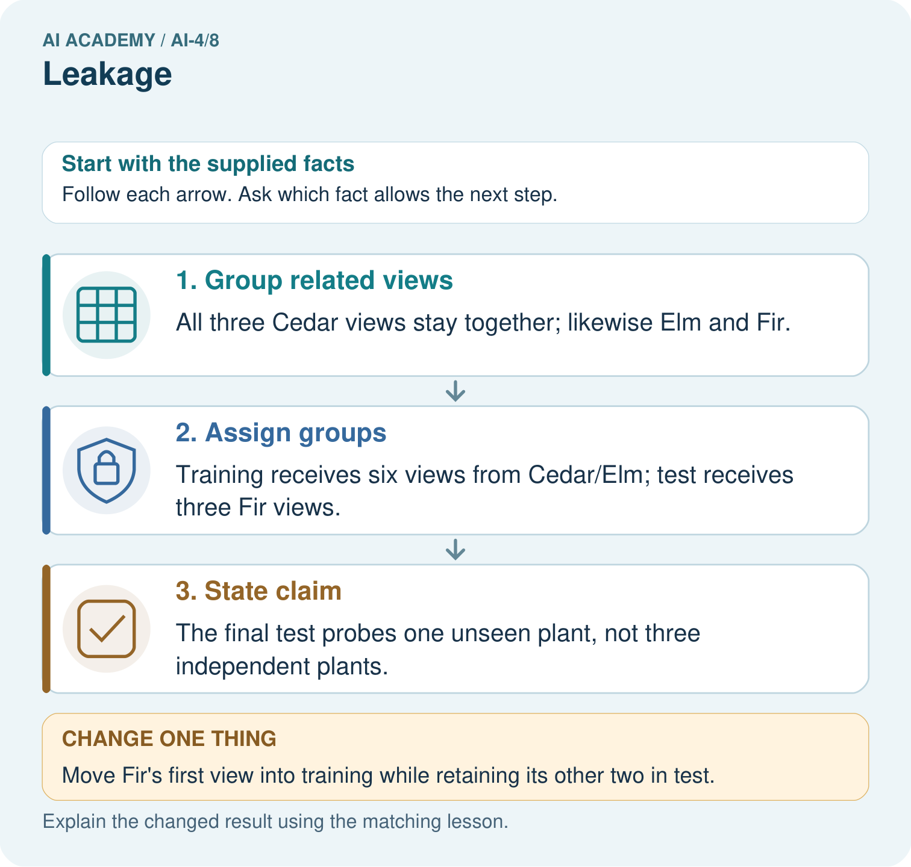
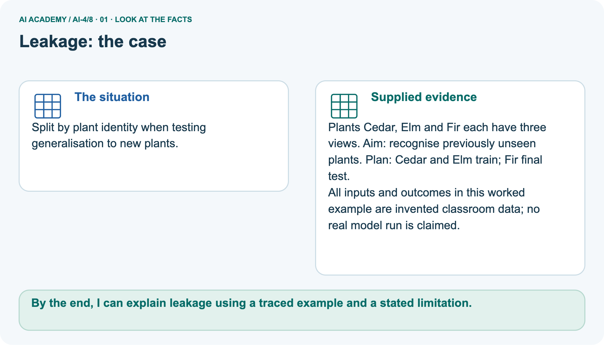
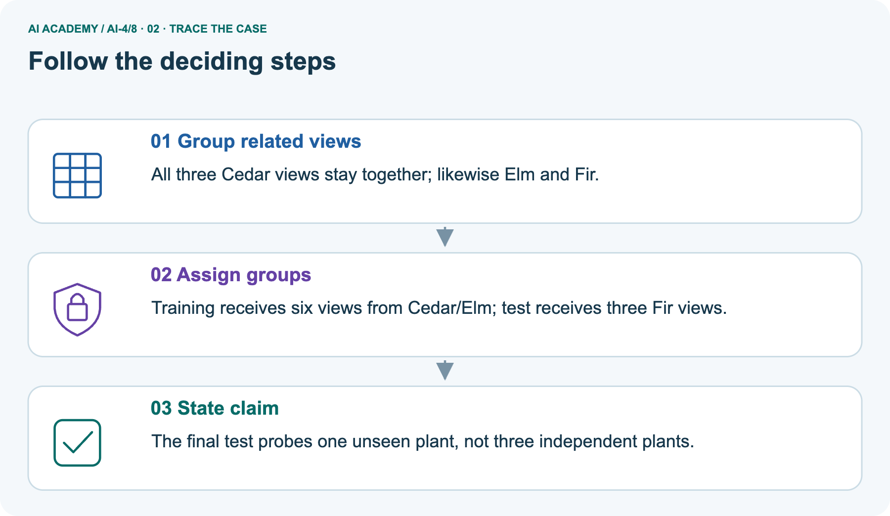
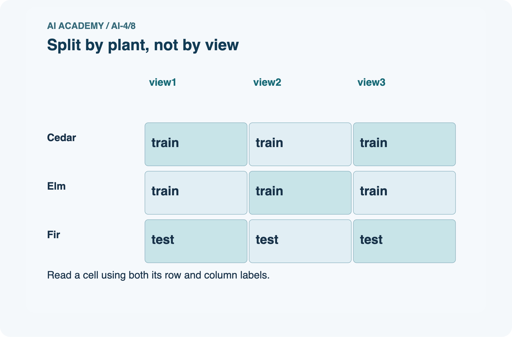
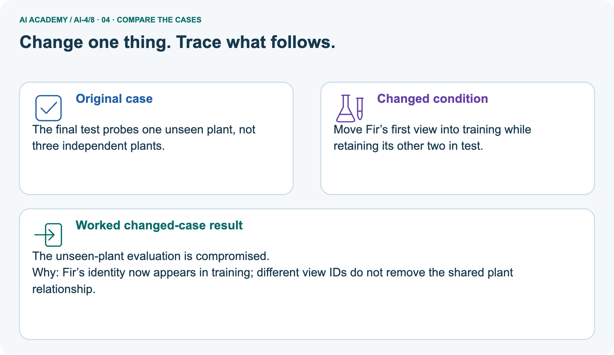
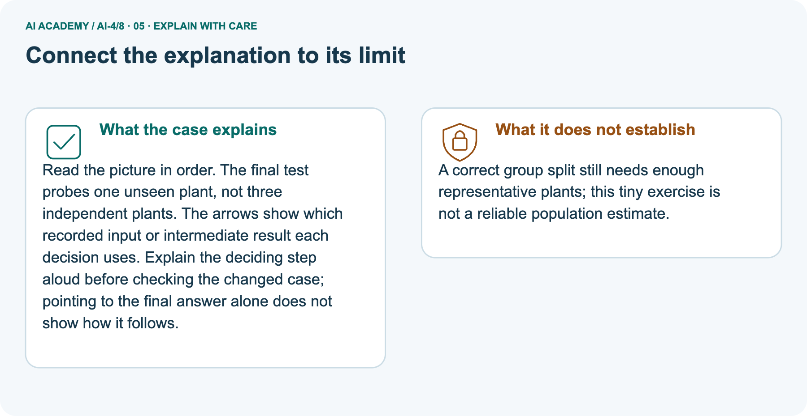

AI Academy · Level 4 · Grade 9 · Week 8 · Workbook
Leakage
Learn to understand, design, build, test and explain AI systems responsibly.
Project: Responsible Plant Classifier
Workbook · 1 of 26
Recall and choose your starting point
Record your starting explanation for Leakage before opening notes. Show any later correction separately.
Try the recall before opening notes. Then use a different colour or a labelled second line to correct your explanation.
Sampling and Intended Use
Without opening the old lesson, explain one key idea from Sampling and Intended Use. Give an example and a mistake that the idea helps you avoid.
Inspect Before Modeling
Without opening the old lesson, explain one key idea from Inspect Before Modeling. Give an example and a mistake that the idea helps you avoid.
Features, Labels, Targets
Without opening the old lesson, explain one key idea from Features, Labels, Targets. Give an example and a mistake that the idea helps you avoid.
Workbook · 2 of 26
Practise with fading help
Complete the supported Leakage trace and record the first step you can explain without help.
Use W2: Distinguish frames from groups for Splits and related examples. Record the answer once; the lesson and workbook refer to the same attempt.
| Given inputs | Procedure I chose | Middle steps | Result and check |
|---|---|---|---|
Workbook · 3 of 26
Individual reasoning check
Check the proposed Leakage explanation against the supplied facts before discussing it.
Use the worked case for Splits and related examples. Proposed explanation: “Different row IDs mean independent examples”. Decide whether this explanation is supported.
Point to the step or supplied fact that decides; explain your repair if needed.
Workbook · 4 of 26
Independent transfer case
Write one first attempt at the reserved independent case before feedback. Repeated copies of that case refer to the same recorded attempt.
Independent case: Changed independent case
Each of five plants has four photos. A random photo split puts different views of every plant in both training and test sets. Explain the problem and repair.
Attempt this case before feedback. Record any help. Earlier examples below are further practice; a case already practised with feedback cannot establish fresh transfer.
Workbook · 5 of 26
Your learning target
Connect the Leakage target to a trace and a justified conclusion.
Five photos of each leaf are randomly split by file into train and test. Why can accuracy be optimistic? Give a corrected grouping rule.
Workbook · 6 of 26
Solve the given case
Solve the supplied Leakage case and show the deciding evidence.
Ten photos per leaf are randomly split so one leaf appears in train and test.
Explain and repair leakage.
Show your trace, calculation or evidence
Workbook · 7 of 26
Check a changed case
Apply the procedure to the changed case and record why the conclusion follows.
A feature records the expert's final species decision, made after the prediction time. Why is this leakage, and what should happen to it?
My independent answer and reason
Week 8 Test and reflect
Workbook · 8 of 26
Design a revealing test
Specify a changed input, expected result and observation separately.
Create a changed input, boundary case or missing-information case. Write the expected answer or safe response before testing.
| Test record | My evidence |
|---|---|
| Changed input or condition | |
| Expected answer or fallback | |
| Observed result | |
| Why the result occurred |
Workbook · 9 of 26
Project checkpoint
Justify what Leakage adds to Responsible Plant Classifier and keep the evidence.
Audit filenames, metadata, post-diagnosis fields, and duplicate plant identities; record every removed leakage path.
The project change and evidence I will keep
Workbook · 10 of 26
Self check
Judge explanation, evidence, transfer and limits separately; attach the work behind your judgement.
- I can explain the mechanism.
- I can show evidence.
- I can handle a changed case.
- I can name a limit.
Mark each as not yet, with help or independently, and attach supporting work.
Teacher review ____________________ Next step ____________________
Workbook · 11 of 26
Transfer practice from the original programme
Use this earlier case as transfer practice. A case already discussed with feedback is not fresh assessment evidence.
Five photos of each leaf are randomly split by file into train and test. Why can accuracy be optimistic? Give a corrected grouping rule.
Record support used: none, hint or teacher explanation.
Workbook · 12 of 26
W1 Explain the three roles
Explain the three roles. Apply the supplied Leakage facts and keep your reasoning.
Explain what training, validation and test sets are used for. What changes if you repeatedly choose a model using its test score?
Workbook · 13 of 26
W2 Distinguish frames from groups
Distinguish frames from groups. Apply the supplied Leakage facts and keep your reasoning.
Where to find the supplied example
Reference for this exercise: open this week’s student lesson, “Leakage”, at “See how it works” and “Follow a worked example”. Use the original worked values or code named in the question; the later pictorial case is a separate example. Keep this reference beside your workbook while practising.
For the worked A through F plan, give training, validation and test counts first in groups and then in rows. Interpret [] from the code and state one problem it cannot detect.
Workbook · 14 of 26
W3 Repair a related example leak
Repair a related example leak. Apply the supplied Leakage facts and keep your reasoning.
A1 and A2 are in training and A3 is in test. Explain why unique frame IDs and a fixed random seed do not fix this. Propose a repair and what to record.
Workbook · 15 of 26
W4 Audit and repair independently
Attempt before feedback. If this repeats the selected independent case, reuse that first attempt; otherwise keep a separate record. Audit and repair independently. Apply the supplied Leakage facts and keep your reasoning.
Eight frames come from trips P (P1 P2 P3), Q (Q1 Q2), R (R1), S (S1 S2). A proposed split is training P1 Q1 R1; validation P2 S1; test Q2 P3 S2. Identify shared groups for each pair of sets.
Repair it by assigning P and Q to training, R to validation and S to test. List all frames in each role and give row and group counts. State one limit of the repaired plan.
Workbook · 16 of 26
W5 Match separation to the claim
Match separation to the claim. Apply the supplied Leakage facts and keep your reasoning.
A model will be evaluated on new routes. Route North has trips A and B; route South has C and D. A proposed split trains on A and C and tests on B and D. Explain the problem and give a route-based alternative.
Is this enough for a strong performance claim?
Workbook · 17 of 26
Scaling without leakage — W1 Learn the scale from training
Use the supplied Leakage task to record your reasoning, evidence and next step.
Using A,B,C, give the minimum, maximum and range for each feature. Transform all three training rows and query (11,120). Explain which rows supplied the scale.
Workbook · 18 of 26
Scaling without leakage — W2 Trace the changed prediction
Use the supplied Leakage task to record your reasoning, evidence and next step.
For query (11,120), calculate raw and scaled distances to A,B,C. Give both k=1 predictions. Does this prove that scaling always improves predictions?
Workbook · 19 of 26
Scaling without leakage — W3 Keep one coordinate system
Use the supplied Leakage task to record your reasoning, evidence and next step.
Transform (12,80) using the stored training scale. Explain the negative value and why validation must not fit its own scale. Give the worked validation and baseline scores.
Workbook · 20 of 26
Scaling without leakage — W4 Scale a fresh dataset independently
Use the supplied Leakage task to record your reasoning, evidence and next step.
New training rows are P (20,1000) clear, Q (40,600) blocked, R (40,1000) blocked. Fit minima and ranges. For query (22,680), show transformed features, raw and scaled distances to P,Q,R, and both k=1 predictions.
Transform new row (50,520) with the same scale.
Workbook · 21 of 26
Scaling without leakage — W5 Repair two preprocessing mistakes
Use the supplied Leakage task to record your reasoning, evidence and next step.
A learner fits scales using training plus validation features but no labels. Another divides by a zero training range. Explain both problems and give a recorded repair for each.
Workbook · 22 of 26
Feedback, return check and learning record
Record the first repaired step and a different case to revisit after a delay.
| Evidence | My record |
|---|---|
| Worked alone / hint / model | |
| First step I repaired and why | |
| New case checked later; date and result | |
| What I can now explain without notes | |
| One remaining question |
Revisit this idea with your teacher after a delay. Familiarity is different from explaining and using it on a changed case.
Workbook · 23 of 26
Pictorial case practice: Leakage
Split by plant identity when testing generalisation to new plants. Explain the labelled step before checking the changed condition.
Split by plant identity when testing generalisation to new plants.
Plants Cedar, Elm and Fir each have three views. Aim: recognise previously unseen plants. Plan: Cedar and Elm train; Fir final test.
All inputs and outcomes in this worked example are invented classroom data; no real model run is claimed.


How many independently new plant identities are in the original test? Point to the relevant step in the picture, then write the changed result and the rule or evidence that supports it.
Record the help used
Support used: alone / hint / worked example. This record is practice evidence.
Project connection: For your Responsible Plant Classifier, save the input, procedure, observed result and limitation of this check.
Label this worked example as practice; use a different, previously unreviewed case when checking independent understanding.
Workbook · 24 of 26
Project portfolio milestone
Keep this week’s input, deciding step, result and limit together in the Responsible Plant Classifier record.
Project: Responsible Plant Classifier
Current milestone: Make a transparent first version. Keep a trace of how one input becomes an output; explain the rule or learned component.
For your Responsible Plant Classifier, save the input, procedure, observed result and limitation of this check.
Label this worked example as practice; use a different, previously unreviewed case when checking independent understanding.
| Evidence to keep | My record |
|---|---|
| This week’s input and deciding step | |
| Prediction and actual result (or labelled paper trace) | |
| One change since the previous checkpoint and why | |
| One error or limit and the next test |
Workbook · 25 of 26
Supported practice and learning evidence
Try the supported questions before comparing with hints and feedback. Record what you repaired and the evidence you retained.
Use this supported practice once, in the browser or on paper. Keep the reserved independent assessment for a separate first attempt before teacher feedback.
Split by plant identity when testing generalisation to new plants.
Practice 1: explain the deciding evidence
Which labelled step matches this detail? The final test probes one unseen plant, not three independent plants.
1. Assign groups
2. State claim
3. Group related views
Hint · try first
Hint if needed: Read the steps in the pictorial case. Match the supplied detail to the stage that performs or records it.
Feedback · compare after trying
After your attempt, compare with the supported explanation: State claim The final test probes one unseen plant, not three independent plants. Read the picture in order.
The final test probes one unseen plant, not three independent plants. The arrows show which recorded input or intermediate result each decision uses.
Explain the deciding step aloud before checking the changed case; pointing to the final answer alone does not show how it follows.
Practice 2: explain the deciding evidence
Changed case · predict first
Changed-case practice: Move Fir’s first view into training while retaining its other two in test. Which conclusion is supported by the supplied facts?
1. This one example guarantees correct results for every future input.
2. We can decide the result without examining the changed input or the procedure.
3. The unseen-plant evaluation is compromised.
Hint · try first
Hint if needed: Use the changed condition and the deciding step in the pictorial trace. The answer must say what follows from those facts.
Feedback · compare after trying
After your attempt, compare with the supported explanation: The unseen-plant evaluation is compromised. Fir’s identity now appears in training; different view IDs do not remove the shared plant relationship.
Repair a missing building block
Review Sampling and Intended Use (ai-4/7). Goal: Inspect row meaning missing values and repeated records. Short practice: Which collection would address the intended-use gap most directly?
Point to the relevant step in the picture, then write the changed result and the rule or evidence that supports it.. Return to this week and explain what you changed.
Review Inspect Before Modeling (ai-4/5). Goal: Inspect row meaning missing values and repeated records. Short practice: Which original information should the inspection log preserve?
Point to the relevant step in the picture, then write the changed result and the rule or evidence that supports it.. Return to this week and explain what you changed.
Review Features, Labels, Targets (ai-4/2). Goal: Separate prediction inputs from observed targets. Short practice: Why can a historical table contain a field that is an invalid input?
Point to the relevant step in the picture, then write the changed result and the rule or evidence that supports it.. Return to this week and explain what you changed.
Predict, run and debug
The browser lab lets you edit the supported Python examples already included in this lesson. Predict first, run, inspect the actual output or error, change one input, then run again.
Keep code, predictions, actual results and a reasoned revision together. On paper, label your result as a trace rather than an execution.
Keep your completed work
Use Download completed work in the hosted lesson to export your answers, reflections, practice feedback and code-run evidence. Open the HTML copy to read or print it.
Drafts stay in this browser when storage is available; clear drafts on a shared device.
Workbook · 26 of 26
Visual concept journey
Explain each Leakage picture from its labels, then record a relevant limit.
01. Leakage: the case

Split by plant identity when testing generalisation to new plants. Supplied facts: Plants Cedar, Elm and Fir each have three views. Aim: recognise previously unseen plants. Plan: Cedar and Elm train; Fir final test.
All inputs and outcomes in this worked example are invented classroom data; no real model run is claimed.
Point to the given fact that matters most. Explain why it matters.
02. Follow the deciding steps

Group related views: All three Cedar views stay together; likewise Elm and Fir. → Assign groups: Training receives six views from Cedar/Elm; test receives three Fir views. → State claim: The final test probes one unseen plant, not three independent plants.
Point to each numbered stage and explain which recorded input it uses.
03. Split by plant, not by view

Split by plant, not by view. Cedar: view1 = train, view2 = train, view3 = train. Elm: view1 = train, view2 = train, view3 = train. Fir: view1 = test, view2 = test, view3 = test.
Read the labels and values. Explain the relationship the model shows.
04. Change one thing. Trace what follows.

Original case: The final test probes one unseen plant, not three independent plants. Changed condition: Move Fir’s first view into training while retaining its other two in test.
Expected result: The unseen-plant evaluation is compromised. Reason: Fir’s identity now appears in training; different view IDs do not remove the shared plant relationship.
Predict before checking the worked changed-case result. Name what changed and what the supplied facts allow you to conclude.
05. Connect the explanation to its limit

Read the picture in order. The final test probes one unseen plant, not three independent plants. The arrows show which recorded input or intermediate result each decision uses.
Explain the deciding step aloud before checking the changed case; pointing to the final answer alone does not show how it follows.
Limit: A correct group split still needs enough representative plants; this tiny exercise is not a reliable population estimate.
Explain the case, then point to a limit on the claim.
06. Make the idea visible in your project

For your Responsible Plant Classifier, save the input, procedure, observed result and limitation of this check.
Label this worked example as practice; use a different, previously unreviewed case when checking independent understanding. Draw your input, deciding step, result and limit.
Supported question: How many independently new plant identities are in the original test? Point to the relevant step in the picture, then write the changed result and the rule or evidence that supports it.
Draw your project trace and justify the deciding step using evidence.